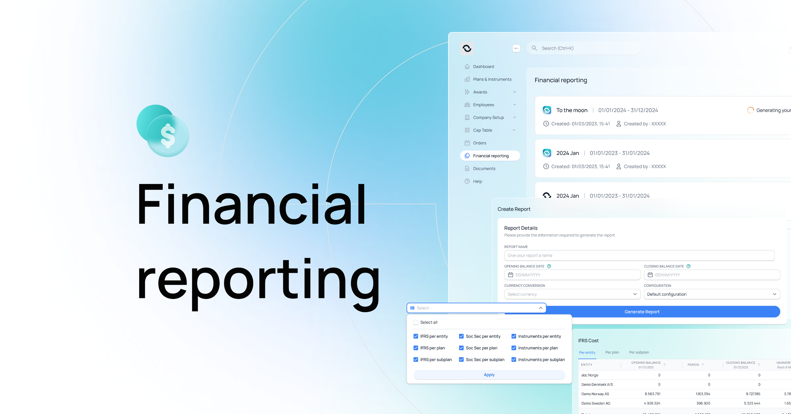
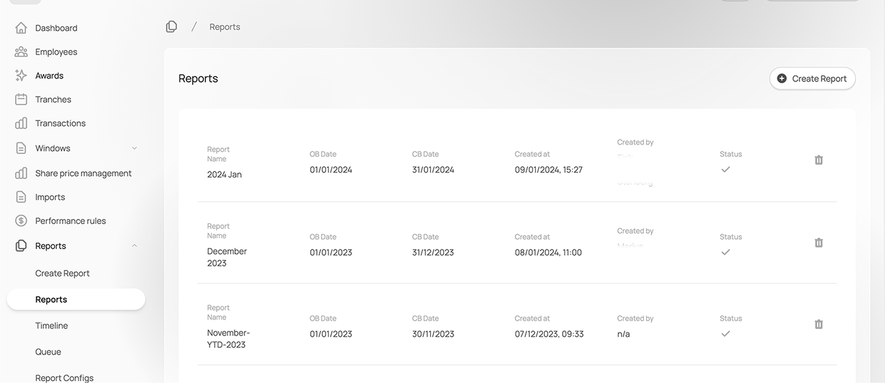
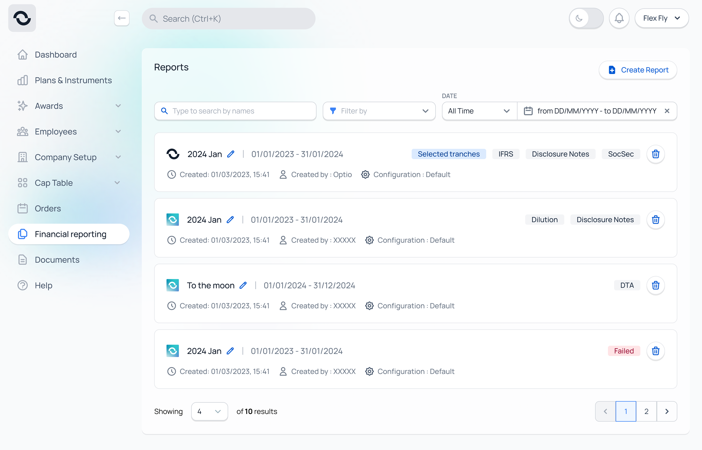

Every month, finance teams rebuilt the same spreadsheet. I moved the work into the product.
The numbers already lived in Optio. The reporting work didn’t. Now finance picks the period and the system fills in the rest.
B2:C5fx=MOVE("Excel", "product")
The story in 30 seconds: what moved from Excel into the product
The job
Before · in Excel
After · in the product
2
The monthly report
Export, paste, apply rules by hand, email
Pick the period. The system fills the rest.
3
Grouping
Done again in Excel every month
Set up once, every report inherits it
4
Currency rules
Fixed by hand
Changed in the product, with checks and safe defaults
5
Fair value
Hire an outside expert
A guided flow admins run themselves
When
2023 — 2025, next to the Employee Portal
Company
Optio Incentives
My role
Product Designer, UX end to end
With
Engineers, a PM and Customer Success

01 · The monthly loop
One missed value held up the whole month.
Finance teams at our client companies had to file a report on their share programs every month. The numbers were in the product, but the report was built somewhere else:
Export the data
Paste it into Excel
Apply the rules by hand
Send the file out
↺Something changed? Customer Success rebuilt the spreadsheet. Again.
The rule I designed against
If a screen asks a finance team to do work the system could do, the design isn’t finished.
02 · Mapping the month
Before drawing a screen, I drew the whole month.
Who gets the data, who checks it, who builds the file, who waits. Laying it out in lanes showed where people were doing the system’s job. Then I turned each part into a user story, screen by screen.
Each part of the journey as a user story, screen by screen.
I didn’t do it from my desk. Clients tested and pushed back the whole way through, and their signals were coded across hundreds of sessions.
350+ hours of client-driven research and testing fed every decision below.03 · Four decisions
Four decisions that moved the work out of Excel.
The core
A guided report flow inside the product
WasA file built by handNowPick the period, the rest fills in
Values, rules and breakdowns come from the system. The same place handles every report type the team has to file.
Built unprompted
Grouping you set up once
WasRegrouped in Excel every monthNowEvery future report inherits it
Each client groups their report differently. Nobody asked for this, but it removed about 1 000 hours a year of manual Excel work.
Strategic
Currency rules in the product
WasRates and country overrides fixed by handNowChange a rate without a spreadsheet
Only the right people can change it. Every change is checked, and the defaults are safe.
Problem reframed
Fair value, guided
WasHire an outside expertNowAdmins run it and trust the result
Explanations sit next to each field, the formulas are visible, and you can compare with earlier runs.
04 · Where AI helped
AI didn’t replace the finance experts. It got me to them faster.
Prototype
A working flow, not frames
I built the new currency-rate setup in v0 and walked into the engineering review with something that ran. See the v0 chat ↗
Words
A first draft of the help text
AI drafted tooltips and error messages in finance language. A finance expert and I edited every line before it shipped.
Second opinion
“What would an auditor say?”
Before a real review, I asked AI to object to a flow. Two rounds out of three were noise. The third caught a real hole.
Said no to
AI-drawn screens. Here, one wrongly named field can break a report. A wrong label costs more than AI saves by drawing it.
05 · What I’d change
I shipped cards where people needed a table.
The reports list could have been a table: sortable columns, dense rows, the format finance admins live in. I chose cards, because cards matched the rest of the product.
A table: rows and columns

What I shipped: cards

What I’d do now
Keep the table, accept the break from the design system, and write down why. Power users needed to sort, scan and act more than they needed things to match.
06 · Impact
The monthly report became a screen, not an email attachment.
D24
New reporting tools live across the platform, built in the product instead of Excel.
D3~1 000 h
Manual Excel work removed each year by reusable grouping, measured in the product since December 2024.
D448.85%
Average time saved per process on related Customer Success back-office work.
What the team said
Sebastian, engineer on the reporting team, in Slack during the OKR review.The engineers, PM and Customer Success partners who shipped this together.